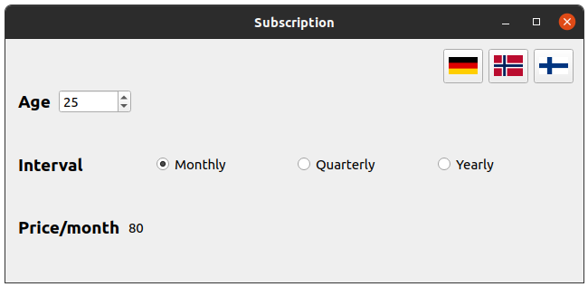

Bindable Properties Example
Demonstrates how the usage of bindable properties can simplify your C++ code.
In this example we will demonstrate two approaches for expressing the relationships between different objects depending on each other: signal/slot connection-based and bindable property-based. For this purpose we will consider a subscription service model to calculate the cost of the subscription.

Modelling Subscription System with Signal/Slot Approach
Let's first consider the usual pre-Qt 6 implementation. To model the subscription service the Subscription class is used:
class Subscription : public QObject { Q_OBJECT public: enum Duration { Monthly = 1, Quarterly = 4, Yearly = 12 }; Subscription(User *user); void calculatePrice(); int price() const { return m_price; } Duration duration() const { return m_duration; } void setDuration(Duration newDuration); bool isValid() const { return m_isValid; } void updateValidity(); signals: void priceChanged(); void durationChanged(); void isValidChanged(); private: double calculateDiscount() const; int basePrice() const; QPointer<User> m_user; Duration m_duration = Monthly; int m_price = 0; bool m_isValid = false; };
It stores the information about the subscription and provides corresponding getters, setters, and notifier signals for informing the listeners about the subscription information changes. It also keeps a pointer to an instance of the User class.
The price of the subscription is calculated based on the duration of the subscription:
double Subscription::calculateDiscount() const { switch (m_duration) { case Monthly: return 1; case Quarterly: return 0.9; case Yearly: return 0.6; } Q_ASSERT(false); return -1; }
And user's location:
int Subscription::basePrice() const { if (m_user->country() == User::None) return 0; return (m_user->country() == User::Norway) ? 100 : 80; }
When the price changes, the priceChanged() signal is emitted, to notify the listeners about the change:
void Subscription::calculatePrice() { const auto oldPrice = m_price; m_price = qRound(calculateDiscount() * m_duration * basePrice()); if (m_price != oldPrice) emit priceChanged(); }
Similarly, when the duration of the subscription changes, the durationChanged() signal is emitted.
void Subscription::setDuration(Duration newDuration) { if (newDuration != m_duration) { m_duration = newDuration; calculatePrice(); emit durationChanged(); } }
Note: Both methods need to check if the data is actually changed and only then emit the signals. setDuration() also needs to recalculate the price, when the duration has changed.
The Subscription is not valid unless the user has a valid country and age, so the validity is updated in the following way:
void Subscription::updateValidity() { bool isValid = m_isValid; m_isValid = m_user->country() != User::None && m_user->age() > 12; if (m_isValid != isValid) emit isValidChanged(); }
The User class is simple: it stores country and age of the user and provides the corresponding getters, setters, and notifier signals:
class User : public QObject { Q_OBJECT public: enum Country { None, Finland, Germany, Norway, }; Country country() const { return m_country; } void setCountry(Country country); int age() const { return m_age; } void setAge(int age); signals: void countryChanged(); void ageChanged(); private: Country m_country = Country::None; int m_age = 0; }; void User::setCountry(Country country) { if (m_country != country) { m_country = country; emit countryChanged(); } } void User::setAge(int age) { if (m_age != age) { m_age = age; emit ageChanged(); } }
In the main() function we initialize instances of User and Subsrcription:
User user;
Subscription subscription(&user);
And do the proper signal-slot connections, to update the user and subsrcription data when UI elements change. That is straightforward, so we will skip this part.
Next, we connect to Subscription::priceChanged(), to update the price in the UI when the price changes.
QObject::connect(&subscription, &Subscription::priceChanged, [&] {
priceDisplay->setText(QString::number(subscription.price()));
});
We also connect to Subscription::isValidChanged(), to disable the price display if the subscription isn't valid.
QObject::connect(&subscription, &Subscription::isValidChanged, [&] {
priceDisplay->setEnabled(subscription.isValid());
});
Because the subsrcription price and validity also depend on the user's country and age, we also need to connect to the User::countryChanged() and User::ageChanged() signals and update subscription accordingly.
QObject::connect(&user, &User::countryChanged, [&] {
subscription.calculatePrice();
subscription.updateValidity();
});
QObject::connect(&user, &User::ageChanged, [&] {
subscription.updateValidity();
});
This works, but there are some problems:
- There's a lot of boilerplate code for the signal-slot connections, to be able to react to changes to
userorsubscription. If any of the dependencies of the price changes, we need to remember to emit the corresponding notifier signals, to recalculate the price and update it in the UI. - If more dependencies for price calculation are added in future, we'll need to add more signal-slot connections and make sure all the dependencies are properly updated whenever any of them changes. The overall complexity will grow, and the code will become harder to maintain.
- The
SubscriptionandUserclasses depend on the metaobject system to be able to use the signal/slot mechanism.
Can we do better?
Modeling Subscription System with Bindbable Properties
Now let's see how the Qt Bindable Properties can help to solve the same problem. First, let's have a look at the BindableSubscription class, which is similar to the Subscription class, but is implemented using the bindable properties:
class BindableSubscription { public: enum Duration { Monthly = 1, Quarterly = 4, Yearly = 12 }; BindableSubscription(BindableUser *user); BindableSubscription(const BindableSubscription &) = delete; int price() const { return m_price; } QBindable<int> bindablePrice() { return &m_price; } Duration duration() const { return m_duration; } void setDuration(Duration newDuration); QBindable<Duration> bindableDuration() { return &m_duration; } bool isValid() const { return m_isValid; } QBindable<bool> bindableIsValid() { return &m_isValid; } private: double calculateDiscount() const; int basePrice() const; BindableUser *m_user; QProperty<Duration> m_duration { Monthly }; QProperty<int> m_price { 0 }; QProperty<bool> m_isValid { false }; };
The first difference we can notice, is that the data fields are now wrapped inside QProperty classes, and the notifier signals (and as a consequence the dependency from the metaobject system) are gone, and new methods returning a QBindable for each QProperty are added instead. The calculatePrice() and updateValidty() methods are also removed. We'll see below why they aren't needed anymore.
The BindableUser class differs from the User class in a similar way:
class BindableUser { public: enum Country { None, Finland, Germany, Norway, }; BindableUser() = default; BindableUser(const BindableUser &) = delete; Country country() const { return m_country; } void setCountry(Country country); QBindable<Country> bindableCountry() { return &m_country; } int age() const { return m_age; } void setAge(int age); QBindable<int> bindableAge() { return &m_age; } private: QProperty<Country> m_country { None }; QProperty<int> m_age { 0 }; };
The second differenece is in the implementation of these calsses. First of all, the dependencies between subscription and user are now tracked via binding expressions:
BindableSubscription::BindableSubscription(BindableUser *user) : m_user(user) { Q_ASSERT(user); m_price.setBinding([this] { return qRound(calculateDiscount() * m_duration * basePrice()); }); m_isValid.setBinding([this] { return m_user->country() != BindableUser::None && m_user->age() > 12; }); }
Behind the scenes the bindable properties track the dependency changes and update the property's value whenever a change is detected. So if, for example, user's country or age is changed, subscription's price and validity will be updated automatically.
Another difference is that the setters are now trivial:
void BindableSubscription::setDuration(Duration newDuration) { m_duration = newDuration; } void BindableUser::setCountry(Country country) { m_country = country; } void BindableUser::setAge(int age) { m_age = age; }
There's no need to check inside the setters if the property's value has actually changed, QProperty already does that. The dependent properties will be notified about the change only if the value has actually changed.
The code for updating the information about the price in the UI is also simplified:
auto priceChangeHandler = subscription.bindablePrice().subscribe([&] {
priceDisplay->setText(QString::number(subscription.price()));
});
auto priceValidHandler = subscription.bindableIsValid().subscribe([&] {
priceDisplay->setEnabled(subscription.isValid());
});
We subscribe to changes via bindablePrice() and bindableIsValid() and update the price display accordingly when any of these properties changes the value. The subscriptions will stay alive as long as the corresponding handlers are alive.
Also note that the copy constructors of both BindableSubsrciption and BindableUser are disabled, since it's not defined what should happen with their bindings when copying.
As you can see, the code became much simpler, and the problems mentioned above are solved:
- The boilerplate code for the signal-slot connections is removed, the dependencies are now tracked automatically.
- The code is easier to maintain. Adding more dependencies in future will only require adding the corresponding bindable properties and setting the binding expressions that reflect the relationships between each other.
- The
SubscriptionandUserclasses don't depend on the metaobject system anymore. Of course, you can still expose them to the metaobject system and add Q_PROPERTYs if you need, and have the advantages of bindable properties both inC++andQMLcode. You can use the QObjectBindableProperty class for that.